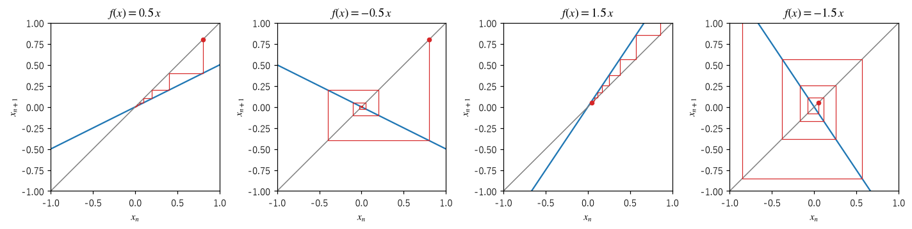
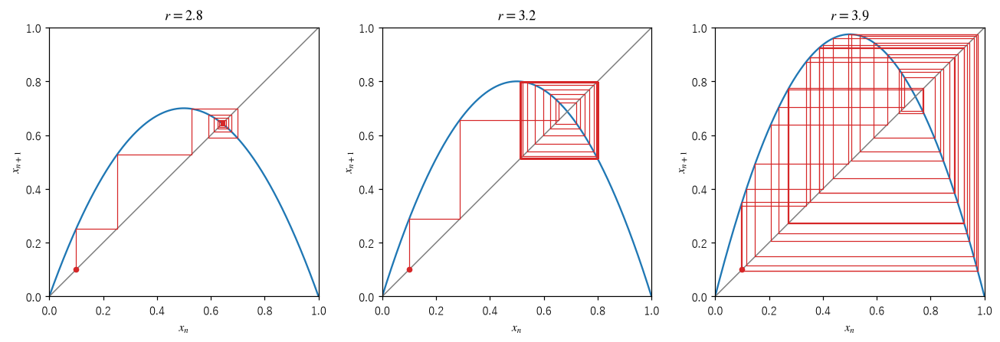
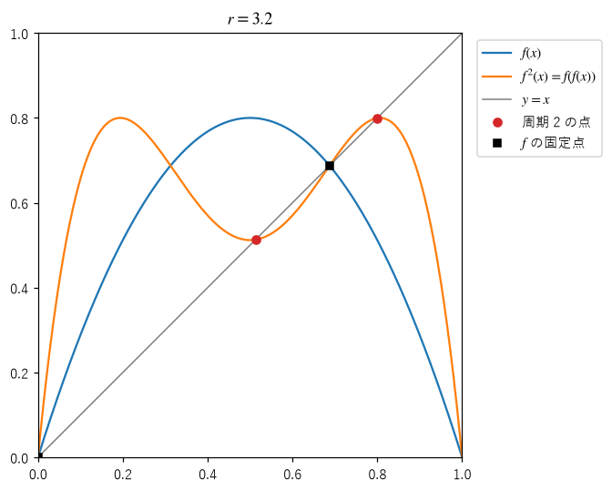
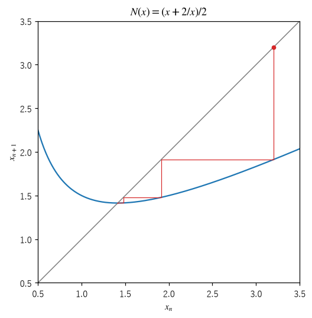

第 2 章 1 次元写像の反復
状態が 1 つの実数で表される、最も簡単な離散時間の力学系 \(x_{n+1} = f(x_n)\) を調べる。1 次元写像は簡単だが、固定点の安定性、周期軌道、そして第 4 章以降で扱うカオスまで、力学系の重要な概念がほぼすべて現れる。また、グラフを使って反復の様子を目で追えるので、直観を養うのに適している。
クモの巣図
写像の反復を図で追う方法に、クモの巣図（cobweb plot）がある。横軸を \(x_n\)、縦軸を \(x_{n+1}\) とする平面に、関数 \(y = f(x)\) のグラフと対角線 \(y = x\) を描き、次の手順で線を引く。
横軸上の初期値 \(x_0\) から縦に進み、グラフ上の点 \((x_0, f(x_0)) = (x_0, x_1)\) に至る。
そこから横に進み、対角線上の点 \((x_1, x_1)\) に至る。対角線の上では縦と横の座標が等しいので、これで \(x_1\) を横軸の値に移したことになる。
そこから縦に進み、グラフ上の点 \((x_1, x_2)\) に至る。以下、2 と 3 を繰り返す。
この手順を実装したのが次の関数である。点 \((x, x)\) から \((x, f(x))\)、\((f(x), f(x))\) へと順に進む折れ線の頂点を、リスト px と py に追加していく。
26def cobweb(ax: Axes, f: Map, x0: float, n: int, lo: float = 0.0, hi: float = 1.0) -> None:
27 """写像 f のグラフ、対角線 y = x、x0 から n 回反復したクモの巣図を ax に描く.
28
29 点 (x, x) から縦に動いてグラフ上の点 (x, f(x)) へ、そこから横に動いて
30 対角線上の点 (f(x), f(x)) へ進む。これを繰り返すと、軌道 x0, x1, x2, ... が描ける。
31 """
32 grid = np.linspace(lo, hi, 400)
33 ax.plot(grid, f(grid), color="C0", linewidth=1.5)
34 ax.plot([lo, hi], [lo, hi], color="0.5", linewidth=1.0)
35 x = np.array(x0)
36 px, py = [x0], [x0]
37 for _ in range(n):
38 y = float(f(x))
39 px += [float(x), y]
40 py += [y, y]
41 x = np.array(y)
42 ax.plot(px, py, color="C3", linewidth=0.8)
43 ax.plot(x0, x0, "o", color="C3", markersize=4)
44 ax.set_xlim(lo, hi)
45 ax.set_ylim(lo, hi)
46 ax.set_aspect("equal")
47 ax.set_xlabel("$x_n$")
48 ax.set_ylabel("$x_{n+1}$")
グラフと対角線が交わる点では \(f(x) = x\) が成り立つ。つまり、交点は固定点である。クモの巣図を描くと、軌道が固定点に吸い込まれるのか、固定点から離れていくのかが一目で分かる。
固定点の安定性
線形写像
まず、最も簡単な線形写像 \(f(x) = a x\) を考える。固定点は \(x^* = 0\) で、軌道は \(x_n = a^n x_0\) となる。したがって、
\(|a| < 1\) なら、\(x_n\) は 0 に近づく。
\(|a| > 1\) なら、\(|x_n|\) は限りなく大きくなる。
\(a < 0\) なら、\(x_n\) の符号が毎回反転し、0 の両側を交互に行き来する。
図 4 は、\(a = 0.5\)、\(-0.5\)、1.5、\(-1.5\) の 4 つの場合のクモの巣図である。\(a > 0\) では軌道は階段状に、\(a < 0\) では渦巻き状になる。


図 4 線形写像 \(f(x) = a x\) のクモの巣図。\(|a| < 1\) では固定点 0 に近づき、\(|a| > 1\) では離れていく。
一般の写像と線形化
一般の写像 \(f\) についても、固定点 \(x^*\) のごく近くでは、\(f\) を 1 次式で近似できる（付録 A のテイラー展開を参照）。
固定点からのずれを \(\varepsilon_n = x_n - x^*\) とおくと、\(\varepsilon_{n+1} \approx f'(x^*)\,\varepsilon_n\) となる。これは係数が \(a = f'(x^*)\) の線形写像である。このように、固定点の近くの振る舞いを 1 次式で近似することを線形化（linearization）という。線形写像の結果から、次の判定法が得られる。
近くの軌道を引き寄せる固定点を安定（stable）な固定点、または吸引的（attracting）な固定点という。近くの軌道を遠ざける固定点を不安定（unstable）な固定点、または反発的（repelling）な固定点という。\(|f'(x^*)| = 1\) のときは、1 次の近似だけでは安定性を判定できない。このような場合は、次の節で見るように、パラメータを変えたときに振る舞いが質的に変わる境目になることが多い。
ロジスティック写像の固定点
第 1 章で紹介したロジスティック写像
の固定点を調べる。\(r x (1 - x) = x\) を解くと、固定点は \(x^* = 0\) と \(x^* = 1 - 1/r\) の 2 つである（後者は \(r > 1\) のときに区間 \([0, 1]\) に入る）。微分は \(f'(x) = r(1 - 2x)\) なので、
\(x^* = 0\) では \(f'(0) = r\)。\(r < 1\) で安定、\(r > 1\) で不安定。
\(x^* = 1 - 1/r\) では \(f'(x^*) = 2 - r\)。\(1 < r < 3\) で安定、\(r > 3\) で不安定。
図 5 は、\(r = 2.8\)、3.2、3.9 のクモの巣図である。


図 5 ロジスティック写像のクモの巣図（初期値 \(x_0 = 0.1\)）
\(r = 2.8\) では、軌道は渦を巻きながら固定点に近づく。\(f'(x^*) = -0.8\) が負なので、固定点の両側を交互に行き来しながら近づく。\(r = 3.2\) では \(f'(x^*) = -1.2\) となり、固定点は不安定になる。軌道は固定点から離れていくが、無限に遠くへ行くわけではなく、四角形の経路を繰り返しなぞるようになる。これは 2 つの値を交互にとる周期軌道である。\(r = 3.9\) では、軌道は一定の経路に落ち着かず、区間のあちこちを不規則に動き回る。
サンプルの report() 関数で、固定点と微分係数を計算した結果を次に示す。最後の行は、次の節で説明する周期 2 の点である。
r = 2.8: 固定点 x* = 0.642857, f'(x*) = -0.800000
r = 3.2: 固定点 x* = 0.687500, f'(x*) = -1.200000
r = 3.2: 周期 2 の点 p = 0.513045, q = 0.799455, f'(p) f'(q) = +0.160000
周期軌道
\(f(p) = q\)、\(f(q) = p\)（\(p \ne q\)）を満たす 2 点 \(p, q\) は、軌道 \(p, q, p, q, \ldots\) を作る。このような軌道を周期 2 の軌道といい、\(p\) と \(q\) を周期点（periodic point）という。一般に、\(f^k(p) = p\) を満たす最小の正の整数 \(k\) を、周期点 \(p\) の周期という。
周期 2 の点は、2 回反復した写像 \(f^2 = f \circ f\) の固定点である。したがって、周期軌道の問題は、\(f^2\) の固定点の問題に帰着できる。図 6 は、\(r = 3.2\) のロジスティック写像 \(f\) と \(f^2\) のグラフである。\(f^2\) のグラフは対角線と 4 点で交わる。そのうち 2 点は \(f\) の固定点（0 と \(1 - 1/r\)）で、残りの 2 点が周期 2 の点 \(p, q\) である。


図 6 \(r = 3.2\) のロジスティック写像 \(f\) と、2 回反復した写像 \(f^2\)
周期軌道の安定性も、\(f^2\) の固定点としての安定性で判定できる。合成関数の微分の公式（連鎖律）から、
である。この値は \(p\) と \(q\) のどちらで計算しても同じになり、軌道全体の安定性を表す。ロジスティック写像では、\(p, q\) は \(r^2 x^2 - r(r + 1)x + (r + 1) = 0\) の 2 つの解で、計算すると \(f'(p)\,f'(q) = -r^2 + 2r + 4\) となる。\(r = 3.2\) では 0.16 となり、周期 2 の軌道は安定である。この値の絶対値が 1 未満になるのは \(3 < r < 1 + \sqrt{6} \approx 3.449\) のときである。\(r\) が \(1 + \sqrt{6}\) を超えると周期 2 の軌道も不安定になり、次は周期 4 の軌道が現れる。この現象は第 4 章で詳しく扱う。
ニュートン法を力学系として見る
方程式 \(g(x) = 0\) を数値的に解くニュートン法（Newton's method）は、写像
の反復である。\(g(x^*) = 0\) なら \(N(x^*) = x^*\) なので、方程式の解は \(N\) の固定点である。\(N\) を微分すると \(N'(x) = g(x)\,g''(x) / g'(x)^2\) となり、解では \(N'(x^*) = 0\)（\(g'(x^*) \ne 0\) の場合）である。微分係数が 0 の固定点を超安定（superstable）な固定点という。超安定な固定点の近くでは、\(\varepsilon_{n+1} \approx C\,\varepsilon_n^2\)（\(C\) は定数）となり、誤差が 1 回ごとに 2 乗で小さくなる。
\(g(x) = x^2 - 2\) とすると \(N(x) = (x + 2/x)/2\) となり、反復は \(\sqrt{2}\) に収束する。図 7 はそのクモの巣図、次の出力は、初期値 1 から 50 桁の精度で反復した結果である（図と出力では初期値が違うが、どちらも同じように収束する）。誤差の指数がほぼ 2 倍ずつ増え、正しい桁数が 1 回ごとにほぼ倍になる様子が分かる。


図 7 \(\sqrt{2}\) を求めるニュートン法のクモの巣図（初期値 3.2）
n x_n 誤差
0 1.00000000000000000000000000000000000000000000000000 4.1e-01
1 1.50000000000000000000000000000000000000000000000000 8.6e-02
2 1.41666666666666666666666666666666666666666666666667 2.5e-03
3 1.41421568627450980392156862745098039215686274509804 2.1e-06
4 1.41421356237468991062629557889013491011655962211574 1.6e-12
5 1.41421356237309504880168962350253024361498192577620 9.0e-25
6 1.41421356237309504880168872420969807856967187537723 2.9e-49
ニュートン法は、解の近くから始めれば非常に速く収束する。しかし、解が複数ある方程式を複素数の範囲で解くと、どの解に収束するかが初期値によって複雑に入り組み、フラクタルな境界が現れる。これは第 9 章で扱う。
まとめ
クモの巣図を使うと、1 次元写像の反復をグラフ上で追える。グラフと対角線の交点が固定点である。
固定点 \(x^*\) は、\(|f'(x^*)| < 1\) なら安定、\(|f'(x^*)| > 1\) なら不安定である。
周期 \(k\) の点は \(f^k\) の固定点であり、その安定性は軌道上の微分係数の積で判定できる。
ロジスティック写像は、\(r\) が 3 を超えると固定点が不安定になり、周期 2 の軌道が現れる。
ニュートン法は、解を超安定な固定点とする写像の反復であり、誤差が 2 乗で小さくなる。